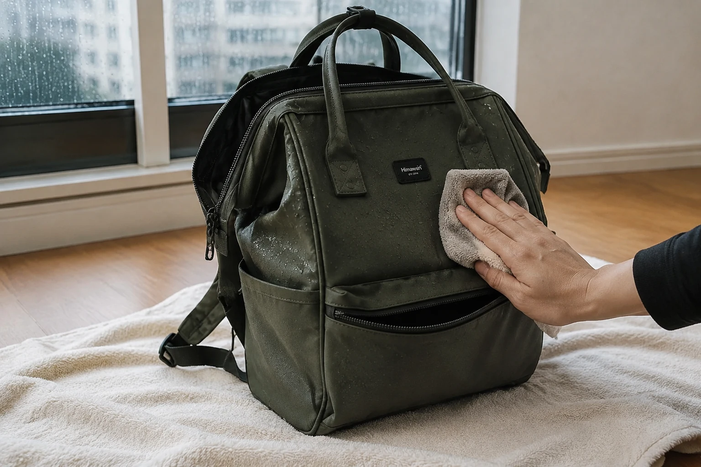

비 오는 날 백팩 관리법: 젖은 가방을 안전하게 말리는 순서

갑자기 비를 맞은 백팩은 겉이 조금 젖어 보여도 포켓 모서리와 안감에 습기가 남을 수 있습니다. 중요한 것은 서둘러 뜨거운 바람을 쐬는 일이 아니라 내용물을 먼저 보호하고, 가방의 소재와 관리 표시를 확인한 뒤 천천히 말리는 것입니다.
1단계: 내용물을 전부 꺼내 상태를 확인하세요
전자기기와 종이류를 가장 먼저 꺼냅니다. 젖은 물건은 마른 물건과 분리하고, 모든 지퍼와 포켓을 열어 안쪽까지 확인하세요. 물이 고인 곳이 있다면 가방을 세게 비틀지 말고 방향을 바꾸어 자연스럽게 빠지도록 합니다.
제품에 방수 또는 생활 방수라는 설명이 있더라도 사용 환경과 마모 상태에 따라 물이 스며들 수 있습니다. 기능을 추측하기보다 실제 내용물과 안감 상태를 직접 확인하는 편이 좋습니다.
2단계: 문지르지 말고 눌러서 물기를 덜어내세요
깨끗하고 마른 천으로 겉면과 안쪽을 가볍게 눌러 물기를 흡수합니다. 오염이 함께 묻었다면 눈에 띄지 않는 부분에 먼저 시험하고, 제품 관리 표시에서 허용한 방법만 사용하세요. 강하게 비비거나 세정제를 바로 바르면 색과 표면 질감이 달라질 수 있습니다.
3단계: 형태를 열어 통풍되는 그늘에서 말리세요
수건 위에 가방을 눕히거나 무게를 지탱할 수 있는 곳에 두고, 수납칸과 지퍼를 충분히 열어 공기가 흐르게 합니다. 안쪽이 접힌 채로 붙어 있지 않도록 모양을 가볍게 펴 주세요. 젖은 신문이나 색이 묻어날 수 있는 종이를 충전재처럼 넣는 것은 피하는 편이 안전합니다.
헤어드라이어, 건조기, 난방기처럼 강한 열을 직접 가하는 방법은 일부 원단, 코팅과 접착 부위에 영향을 줄 수 있습니다. 별도의 제품 지시가 없다면 직사광선을 피해 자연 건조하세요. 가죽 장식이나 특수 소재가 포함되었다면 해당 소재의 관리법을 우선합니다.
4단계: 안쪽까지 마른 뒤 다시 수납하세요
겉면만 보고 바로 물건을 넣지 말고, 안감과 작은 포켓의 모서리, 바닥, 어깨끈 연결부를 손으로 확인합니다. 차갑거나 축축한 느낌이 남아 있다면 방향을 바꾸어 더 말리세요. 완전히 마른 뒤에는 매일 짐을 줄이는 수납 루틴에 따라 필요한 물건만 다시 담습니다.
비 오는 날 귀가 후 체크리스트
- 전자기기와 종이를 먼저 꺼냈나요?
- 모든 수납칸과 지퍼를 열었나요?
- 마른 천으로 물기를 눌러 제거했나요?
- 통풍이 되는 그늘에서 안쪽까지 말리고 있나요?
- 제품의 소재와 세탁·관리 표시를 확인했나요?
비가 잦은 계절에는 우산을 넣을 별도 파우치를 준비하고, 출발 전 가방 안의 중요한 종이와 전자기기를 개별 보호 주머니에 넣는 것도 방법입니다. 새로운 가방을 비교할 때는 제품별 소재와 수납 정보를 실제 사용 장면과 함께 확인하세요.
참고·안내
- Himawari 제품별 소재·수납 정보
- 세탁과 건조는 각 제품의 관리 표시를 우선해 주세요.
자주 묻는 질문
젖은 백팩을 헤어드라이어로 말려도 되나요?
강한 열은 일부 소재와 코팅, 접착 부위에 영향을 줄 수 있습니다. 제품 안내에 별도 지시가 없다면 통풍이 되는 그늘에서 자연 건조하는 편이 안전합니다.
젖은 가방을 바로 세탁해야 하나요?
비에 젖었다는 이유만으로 전체 세탁이 필요한 것은 아닙니다. 먼저 물기와 오염 상태를 확인하고 제품의 세탁 표시를 따르세요.
완전히 말랐는지는 어떻게 확인하나요?
겉면뿐 아니라 안감, 포켓 모서리, 어깨끈 연결부를 손으로 확인하세요. 차갑거나 축축한 느낌이 남으면 조금 더 펼쳐 말립니다.